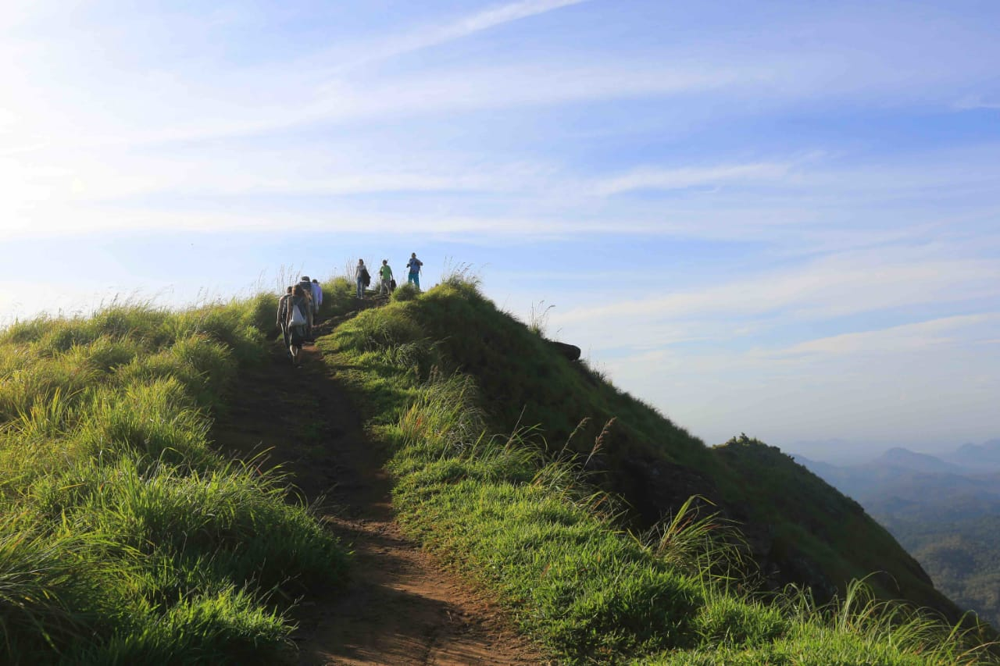
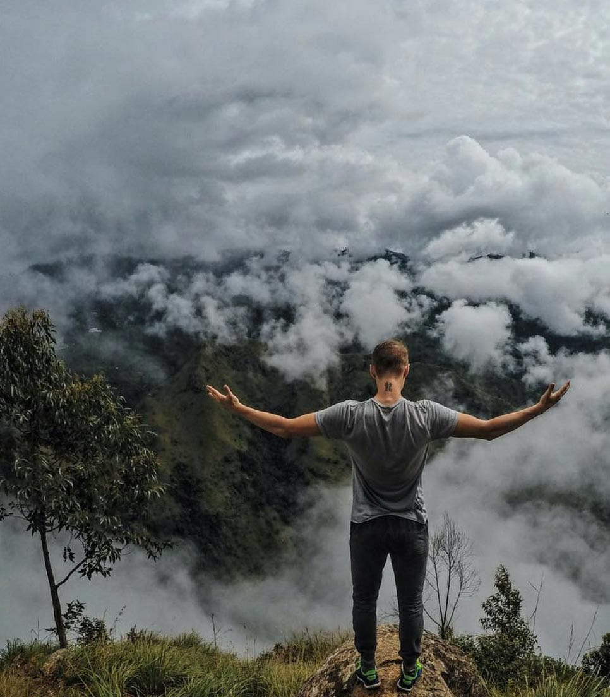
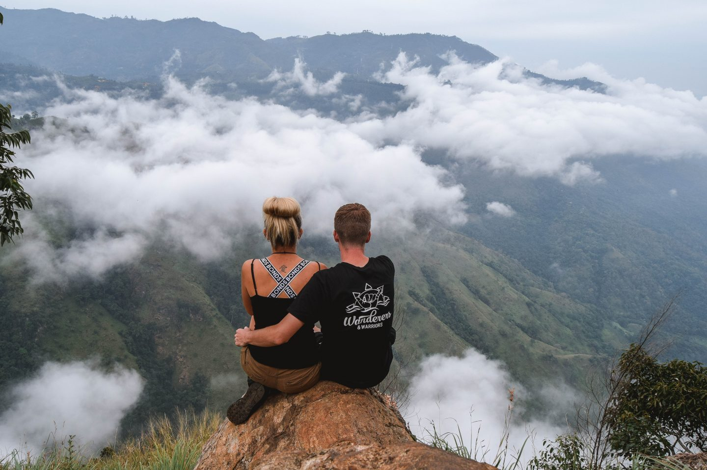
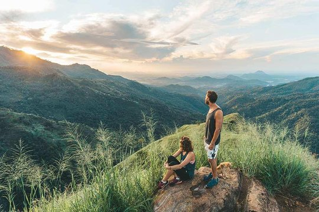
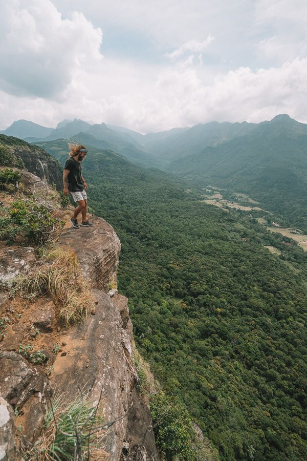
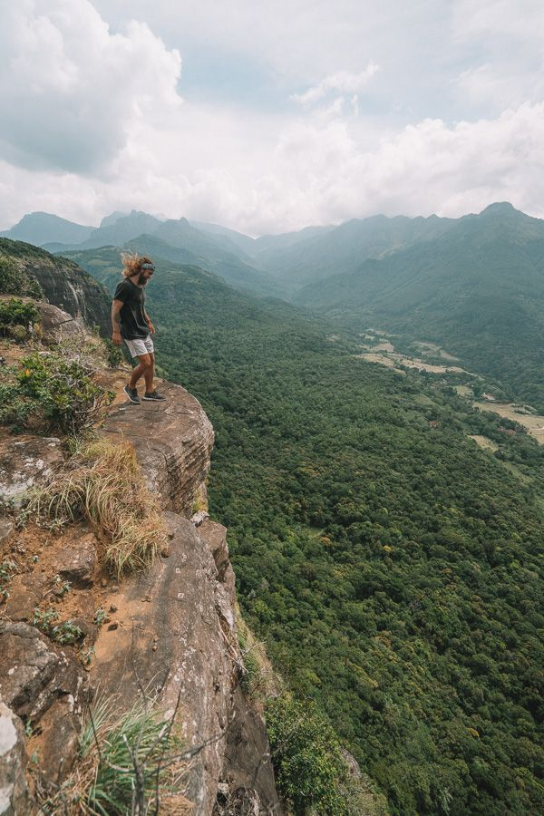

belihul oya

About
Belihul Oya is located in a zone linking wet zone and dry zone of Sri Lanka. The unique location has resulted in Belihul Oya being the zone of highest biodiversity in Sri Lanka. The spectacular sceneries of the area afford a wide variety and trekking and hiking trails over the hills, through the jungles and paddy fields. Still more, no less than three exhilarating treks running from Belihuloya via Bambarakanda Water Falls lead to the Horton Plains National Park situated 2,134 m above sea level. The trek winds and rises through scrub jungle and tea plantations to reach the dramatic escarpment popularly called the World’s End that drops 890 meters off the southern ridge of the Central Highlands. Horton Plains is the only national park where trekking and hiking is allowed. In all other National Parks of Sri Lanka only 4 wheel vehicle driven safari tours are allowed. The other popular trekking trails are Kinchigune Trail, Hawagala Trail, Samanalawewa Trail & Belihul Oya – Ohiya trail via Devils’s Staircase.
Photo Gallery





 
